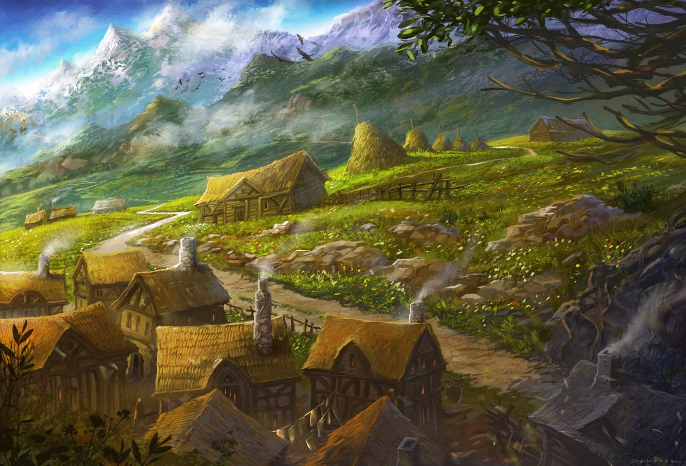
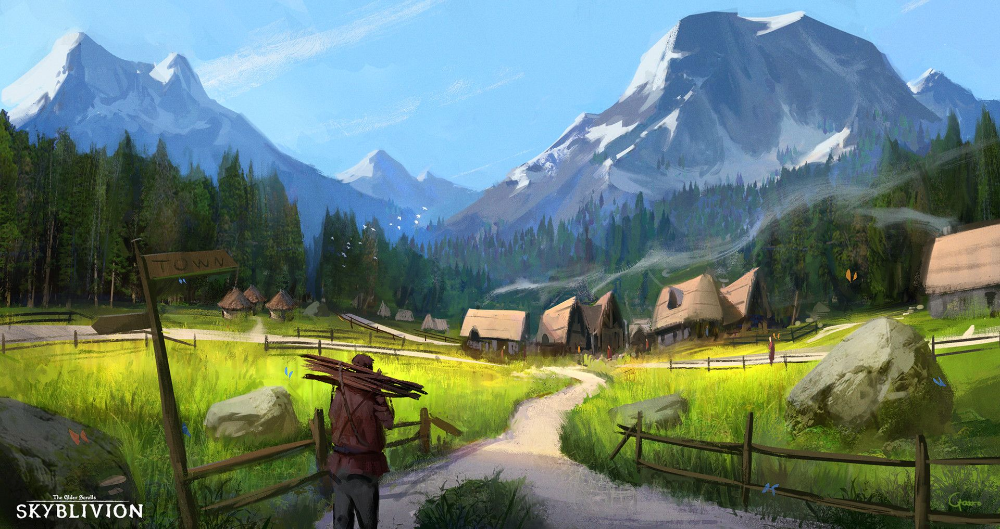

🏡 Поселение Бланс
Родина Каролины


Статус: Сельское поселение
Мэр: Льюис
Расположение: На границе с лесом Крея, у подножия гор
Описание
Бланс — это небольшое, тихое сельское поселение, затерянное на просторах королевства. Жизнь здесь течет размеренно, подчиняясь смене времен года и сбору урожая. Дома здесь строят из крепкого дерева, а по утрам пахнет свежим хлебом. Управляет поселением мэр Льюис — справедливый и рассудительный человек, которого здесь уважают.
Школа и Дозор
Несмотря на скромные размеры, в Блансе есть небольшая сельская школа, где местная детвора учится грамоте, счету и основам истории.
Но главная особенность Бланса — его соседство. Поселение стоит на самой опушке запретного леса Крея. Чтобы никто из жителей или путников не сбился с пути и не сгинул в гуще древнего леса, королевство Эрдуин выстроило здесь постоянный сторожевой дозор. Воины день и ночь патрулируют границу, охраняя покой деревни.
Родина Каролины
Достопримечательности
- Сельская школа: маленькое, но гордое здание с единственным учителем на все предметы.
- Дозорная башня: вышка на границе с лесом, откуда ведется наблюдение за Креей. Рядом — казарма для стражников.
- Дом Мирабель и Эдвина: уютная хижина с целебным садом, где выросла Каролина.
- Дом мэра Льюиса: двухэтажный дом из тёмного дерева в центре поселения, с приёмной на первом этаже.
- Дом шахтёра Гаррика Камнехвата: каменно-деревянная хижина на окраине, ближе к горам. Двор завален инструментами и тележками.
- Пристань: деревянные мостки, лавочки с рыбой, снастями и травами.
- Рыночная площадь: несколько палаток и лотков с едой, одеждой и мелочами.
- Горная тропа: узкая тропа за домом Гаррика, уходящая вверх, к механическому лифту и входам в пещеры.
Таверна «У Кромки леса»
Владельцы: супруги Барнаби и Эльза Кривоколы. Барнаби — крупный, добродушный мужчина, сам готовит на кухне. Эльза — женщина с добрыми глазами и быстрыми руками, встречает гостей и следит за порядком.
Атмосфера: уютно, тепло, пахнет жареным мясом, хлебом и травами. В углу потрескивает камин, на стенах висят старые рыболовные сети и деревянные кружки.
Меню и цены
- Похлёбка «Лесная» — 3 медяка
- Жареная рыба с овощами — 5 медяков
- Пирог с мясом — 6 медяков
- Хлеб с сыром — 2 медяка
- Эль (кружка) — 2 медяка
- Вино (кувшин) — 5 медяков
- Чай с травами — 1 медяк
Проживание
- Общая комната — 2 медяка за ночь
- Отдельная комната — 5 медяков за ночь
- Комната для двоих — 8 медяков за ночь
Дом мэра Льюиса
Расположение: в центре поселения, неподалёку от школы.
Описание: самый крепкий и ухоженный дом в Блансе — двухэтажный, из тёмного дерева, с черепичной крышей и небольшим крыльцом. На первом этаже — просторная комната для приёма посетителей, на втором — жилые комнаты. Льюис может рассказать о проблемах с шахтами и дать рекомендательное письмо к Гаррику.
Дом шахтёра (Гаррика Камнехвата)
Расположение: на окраине Бланса, ближе к горам.
Описание: небольшая каменно-деревянная хижина с дёрновой крышей. Двор завален инструментами и тележками. Внутри — стол с картами шахт, полки с камнями и книгами по горному делу. Гаррик — старый рудокоп, знает все тропы к шахтам, но недоверчив к незнакомцам.